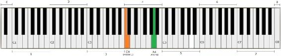

We know that there are only 12 notes in Western music and that each note has its own pitch:
A, A#/Bb, B, C, C#/Db, D, D#/Eb, E, F, F#/Gb, G, G#/Ab
These notes repeat themselves after each octave and go in circle from higher to lower registers, or vice versa. Each note is pre-determined to vibrate at a certain frequency and that frequency is measured in Hertz (Hz).
Some instruments have very big ranges. Piano is the prime example of that – on a full size piano keyboard there are 88 keys, which means there are 88 different pitches that can be produced, which is as many as 7 octaves. An octave, if you remember, is just the distance between one note and that same note repeated in the next higher or lower register.

Figure 2.1. An octave with the middle C is called the Middle octave – it’s the 4th octave on a full size piano
If you look at the figure above you can see that the distance between C3 and C4 is exactly one octave; same with F2 – F3, D6 – D7, etc. The distance between C1 and C3 would be 2 octaves, G4 and G7 3 octaves, etc.
Throughout history there have been many attempts to standardize the musical pitch. The most common modern music standard today sets the A above middle C at exactly 440 Hz. This is called “pitch standard”, or “international standard pitch”, or “concert pitch”. This A4 serves as the reference note, with other notes being set relative to it.